# framework
using GeoStats
# compositional data
using CoDa
# IO modules
using CSV
# viz modules
using PairPlots
import CairoMakie as Mke12 Mineral deposits
In the mining industry, resource estimation consists of interpolating measurements of metal and mineral grades from drill hole samples to 3D grids known as “block models”. Due to highly skewed distributions, several pre-processing steps need to be performed before the actual interpolation. In this chapter, we will cover simple steps for resource estimation and economic assessment of a real mineral deposit.
TOOLS COVERED: @groupby, @transform, @combine, CLR, ProjectionPursuit, EmpiricalVariogram, Kriging, Interpolate, InterpolateNeighbors, Map, Filter, boundingbox, convexhull, viewer
MODULES:
Note
Although we use CairoMakie.jl in this book, many of the 3D visualizations in this chapter demand a more performant Makie.jl backend. Consider using GLMakie.jl if you plan to reproduce the code locally.
12.1 Data
The GeoMet dataset (Hoffimann et al. 2022a) consists of three geospatial tables stored as CSV files. In this chapter, we will only use the drillholes.csv table.
Drill hole samples are always available in mining projects. They contain chemical information for each rock sample (a cylinder) along the drill hole trajectories. In this case, the data has been processed, and only the “X”, “Y”, “Z” coordinates of the centroids of the cylinders were stored:
url = "https://zenodo.org/record/7051975/files/drillholes.csv?download=1"
dtable = georef(CSV.File(download(url)), ("X", "Y", "Z"))
viewer(dtable, pointsize = 4)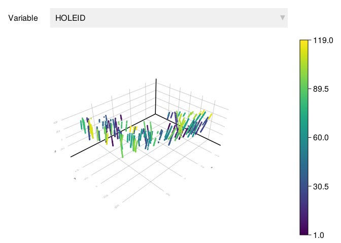
dtable |> describeTable with 6 columns and 19 rows:
variable mean minimum median maximum nmissing
┌──────────────────────────────────────────────────────────
1 │ HOLEID 60.265 1 62.0 119 0
2 │ Ag ppm 1.86199 0.01 1.14 15.38 0
3 │ Al ppm 52374.8 2400.0 56100.0 103300.0 0
4 │ Au ppm 0.470965 0.0 0.21 5.89 0
5 │ C ppm 1117.7 100.0 700.0 20700.0 0
6 │ Ca ppm 9900.6 100.0 6400.0 73700.0 0
7 │ Cl ppm 2303.75 5.48 1756.23 14273.8 0
8 │ Cu ppm 7540.4 0.0 5000.0 60200.0 0
9 │ F ppm 2528.58 20.89 1610.47 19786.3 0
10 │ Fe ppm 245452.0 9900.0 246000.0 500000.0 0
11 │ K ppm 13610.9 100.0 12450.0 45500.0 0
12 │ Mg ppm 17673.0 200.0 14000.0 88800.0 0
13 │ Mn ppm 4282.96 88.95 3685.35 24812.8 0
14 │ Na ppm 4404.8 100.0 1400.0 58900.0 0
15 │ P ppm 720.896 38.08 630.705 5576.14 0
16 │ Pb ppm 9.3938 0.8 6.005 247.83 0
17 │ S ppm 2712.95 100.0 1700.0 21500.0 0
18 │ Th ppm 8.37926 0.37 4.08 94.81 0
19 │ U ppm 19.0894 0.21 10.825 521.49 0There are 18 chemical elements in the table, all measured in parts per million (ppm). The table also stores an integer identifier for each hole trajectory in the “HOLEID” column. There are 119 such trajectories as shown in the “maximum” column of the describe output.
Note
In most mining projects, the drill hole samples are available as “SURVEY”, “COLLAR” and “INTERVAL” tables, which can be desurveyed and composited with DrillHoles.jl.
12.2 Objectives
Our main objective is to estimate the economic value associated with each mining block in a 3D block model, i.e. a CartesianGrid with Hexahedron geometries (the blocks). This economic value in U$ dollars is estimated in terms of various other geospatial variables:
\[ Value = \underbrace{V \times \rho \times Cu \times f \times P}_{\text{revenue}} - \underbrace{V \times \rho \times (C_m + C_p)}_{\text{cost}} \]
where
- \(V\) is the volume of the block in \(m^3\)
- \(\rho\) is the rock density in \(ton/m^3\)
- \(Cu\) is the grade of copper in \([0,1]\)
- \(f\) is the recovery of copper in \([0,1]\)
- \(P\) is the selling price in \(U\$/ton\)
- \(C_m\) is the mining cost in \(U\$/ton\)
- \(C_p\) is the plant cost in \(U\$/ton\)
Secondary objectives include the localization (through 3D visualization) of blocks with high economic value, high grades of Au and Ag, and low grade of S.
For simplicity, we assume the following constants:
- \(\rho = 2.75\ ton / m^3\)
- \(P = 4000\ U\$ / ton\)
- \(C_m = 4\ U\$ / ton\)
- \(C_p = 10\ U\$ / ton\)
12.3 Methodology
In order to estimate the economic value of each mining block, we need to interpolate the grade of Cu. Because we also want to localize the blocks with high grades of Au and Ag, and low grade of S, we will perform multivariate geostatistical interpolation of Cu, Au, Ag and S.
The proposed methodology has the following steps:
- Preliminary analysis and processing
- Definition of interpolation domain
- Multivariate geostatistical interpolation
- Economic assessment and visualizations
12.3.1 Preliminary analysis
We recommend to start any application discarding all information that is not relevant for the stated objectives. In this case, the geotable contains measurements of various chemical elements that are not used in the economic assessment. We define a cleaning pipeline that selects and renames columns of interest, and adds units to the measurements:
selectholeid = Select("HOLEID") →
Coerce("HOLEID" => Multiclass)
selectgrades = Select("Cu ppm" => "Cu",
"Au ppm" => "Au",
"Ag ppm" => "Ag",
"S ppm" => "S") →
Functional(x -> 1e-4*x*u"percent") # 1 ppm = 1e-4 percent
dclean = selectholeid ⊔ selectgradesParallelTableTransform
├─ SequentialTransform
│ ├─ Select([:HOLEID], nothing)
│ └─ Coerce((:HOLEID=>Multiclass,), false, 1)
└─ SequentialTransform
├─ Select([Symbol("Cu ppm"), Symbol("Au ppm"), Symbol("Ag ppm"), Symbol("S ppm")], [:Cu, :Au, :Ag, :S])
└─ Functional(all, #13)dtable = dclean(dtable)| HOLEID | Cu | Au | Ag | S | geometry |
|---|---|---|---|---|---|
| Multiclass | Continuous | Continuous | Continuous | Continuous | Point3 |
| [NoUnits] | [%] | [%] | [%] | [%] | |
| 1 | 0.72 % | 0.000104 % | 6.4e-5 % | 0.61 % | (559.725, -513.31, 252.82) |
| 1 | 0.1 % | 6.0e-6 % | 2.0e-5 % | 0.06 % | (558.955, -515.23, 246.87) |
| 1 | 2.18 % | 0.000202 % | 0.000344 % | 1.17 % | (557.225, -519.61, 233.37) |
| 1 | 2.29 % | 0.000343 % | 0.000488 % | 1.1 % | (555.375, -524.3, 218.92) |
| 1 | 0.59 % | 5.0e-5 % | 0.000125 % | 0.22 % | (553.825, -528.21, 206.94) |
| 1 | 0.56 % | 9.0e-5 % | 9.0e-5 % | 0.28 % | (552.075, -532.56, 193.91) |
| 1 | 2.0 % | 0.000356 % | 9.3e-5 % | 1.96 % | (550.305, -537.08, 180.8) |
| 1 | 0.28 % | 2.1e-5 % | 7.6e-5 % | 0.14 % | (547.495, -544.31, 160.08) |
| 1 | 0.61 % | 2.0e-5 % | 0.000112 % | 0.28 % | (544.335, -552.43, 137.08) |
| 1 | 0.25 % | 1.6e-5 % | 7.7e-5 % | 0.09 % | (541.695, -559.19, 117.96) |
| ⋮ | ⋮ | ⋮ | ⋮ | ⋮ | ⋮ |
In order to better understand the multivariate distribution of chemical elements, we visualize the values of the drill hole samples with the pairplot:
dtable |> Select("Cu", "Au", "Ag", "S") |> DropUnits() |> values |> pairplot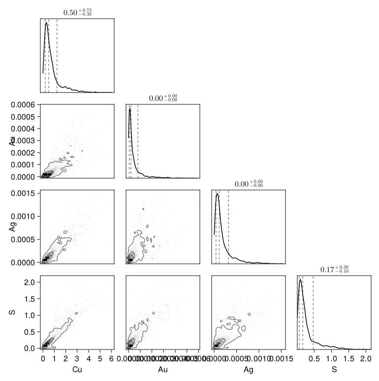
We can observe that the distribution is very skewed.
Note
The DropUnits transform can be useful to drop units from the columns of a table before calling functions that do not support units yet (e.g., pairplot).
12.3.2 Domain of interpolation
Before we can interpolate these variables, we need to define our domain of interpolation. In this application, we will define a 3D CartesianGrid in terms of the drill hole trajectories alone. Some of the Hexahedron geometries will be disabled whenever they are outside the convexhull of the points.
First, let’s create our full CartesianGrid using the boundingbox of the trajectories:
# compute bounding box
bbox = boundingbox(dtable.geometry)
# size of blocks in meters
bsize = (25.0, 25.0, 12.5)
# define Cartesian grid
grid = CartesianGrid(extrema(bbox)..., bsize)85×66×66 CartesianGrid{3,Float64}
minimum: Point(-1150.004825000069, -882.9003199972212, -399.92)
maximum: Point(974.9951749999309, 767.0996800027788, 425.08)
spacing: (25.0, 25.0, 12.5)viz(dtable.geometry, color = "black", pointsize = 4)
viz!(grid, alpha = 0.2)
Mke.current_figure()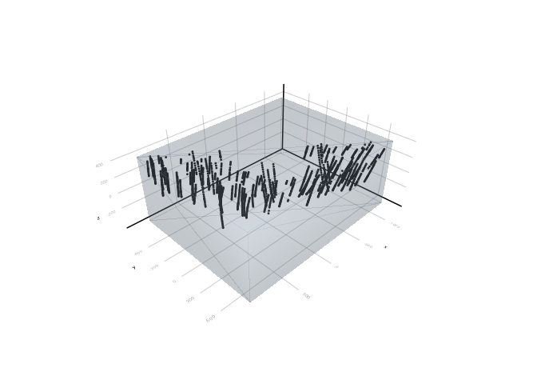
Second, let’s compute the convexhull of points projected on the horizontal plane:
function proj(point)
x, y, z = coordinates(point)
Point(x, y)
end
points = proj.(dtable.geometry)
chull = convexhull(points)PolyArea{2,Float64}
outer
└─ Ring((-1150.0, 641.23), ..., (-1120.56, 701.22))viz(chull)
viz!(points, color = "black", pointsize = 4)
Mke.current_figure()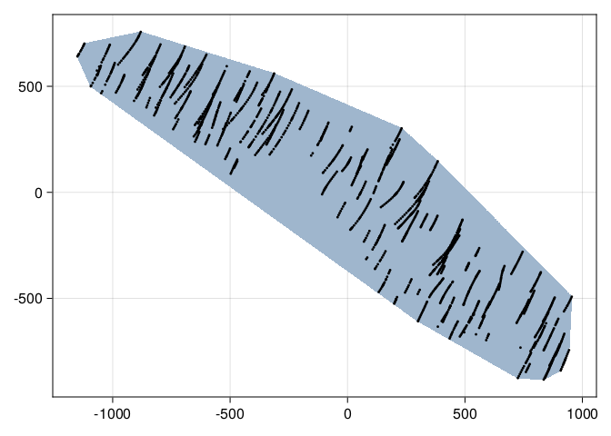
We can filter the grid to retain Hexahedrons for which the projected centroid is inside the convexhull:
active = findall(h -> proj(centroid(h)) ∈ chull, grid)
blocks = view(grid, active) 136422 view(::CartesianGrid{3,Float64}, [76, 77, 78, 79, ..., 370102, 370103, 370104, 370186])
├─ Hexahedron((724.995, -882.9, -399.92), ..., (724.995, -857.9, -387.42))
├─ Hexahedron((749.995, -882.9, -399.92), ..., (749.995, -857.9, -387.42))
├─ Hexahedron((774.995, -882.9, -399.92), ..., (774.995, -857.9, -387.42))
├─ Hexahedron((799.995, -882.9, -399.92), ..., (799.995, -857.9, -387.42))
├─ Hexahedron((824.995, -882.9, -399.92), ..., (824.995, -857.9, -387.42))
⋮
├─ Hexahedron((-900.005, 717.1, 412.58), ..., (-900.005, 742.1, 425.08))
├─ Hexahedron((-875.005, 717.1, 412.58), ..., (-875.005, 742.1, 425.08))
├─ Hexahedron((-850.005, 717.1, 412.58), ..., (-850.005, 742.1, 425.08))
├─ Hexahedron((-825.005, 717.1, 412.58), ..., (-825.005, 742.1, 425.08))
└─ Hexahedron((-900.005, 742.1, 412.58), ..., (-900.005, 767.1, 425.08))We would also like to filter Hexahedrons that are above the terrain. Let’s create a simple terrain elevation model by interpolating the vertical “Z” coordinate of the first point of each trajectory:
ztable = @chain dtable begin
@groupby(:HOLEID)
@transform(:Z = last(coordinates(:geometry)), :geometry = proj(:geometry))
@combine(:Z = first(:Z), :geometry = first(:geometry))
end| HOLEID | Z | geometry |
|---|---|---|
| Multiclass | Continuous | Point2 |
| [NoUnits] | [NoUnits] | |
| 1 | 252.82 | (559.725, -513.31) |
| 2 | 280.94 | (745.345, -280.6) |
| 3 | 281.09 | (-304.025, 318.13) |
| 4 | 256.16 | (-416.575, 570.35) |
| 5 | 324.65 | (198.815, -524.78) |
| 6 | 317.1 | (493.605, -530.83) |
| 7 | 245.13 | (-367.965, 394.78) |
| 8 | 250.67 | (17.6752, 33.4297) |
| 9 | 254.49 | (-514.305, 594.68) |
| 10 | 294.44 | (-674.415, 596.84) |
| ⋮ | ⋮ | ⋮ |
We perform the interpolation of the “Z” coordinate on the projected centroids of the blocks:
centroids = unique(proj.(centroid.(blocks)))
ztable = ztable |> Select("Z") |> Interpolate(centroids)| Z | geometry |
|---|---|
| Continuous | Point2 |
| [NoUnits] | |
| 315.273 | (737.495, -870.4) |
| 318.783 | (762.495, -870.4) |
| 321.816 | (787.495, -870.4) |
| 324.655 | (812.495, -870.4) |
| 327.816 | (837.495, -870.4) |
| 309.922 | (687.495, -845.4) |
| 314.0 | (712.495, -845.4) |
| 318.755 | (737.495, -845.4) |
| 323.911 | (762.495, -845.4) |
| 327.361 | (787.495, -845.4) |
| ⋮ | ⋮ |
ztable |> viewer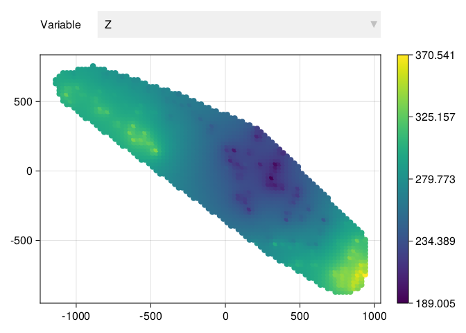
Finally, we can filter the blocks for which the “Z” coordinate is below the terrain:
p(h) = proj(centroid(h))
Z(h) = last(coordinates(centroid(h)))
zdict = Dict(ztable.geometry .=> ztable.Z)
active = findall(h -> Z(h) < zdict[p(h)], blocks)
blocks = view(blocks, active)110854 view(::CartesianGrid{3,Float64}, [76, 77, 78, 79, ..., 337107, 337109, 337193, 342719])
├─ Hexahedron((724.995, -882.9, -399.92), ..., (724.995, -857.9, -387.42))
├─ Hexahedron((749.995, -882.9, -399.92), ..., (749.995, -857.9, -387.42))
├─ Hexahedron((774.995, -882.9, -399.92), ..., (774.995, -857.9, -387.42))
├─ Hexahedron((799.995, -882.9, -399.92), ..., (799.995, -857.9, -387.42))
├─ Hexahedron((824.995, -882.9, -399.92), ..., (824.995, -857.9, -387.42))
⋮
├─ Hexahedron((924.995, -682.9, 337.58), ..., (924.995, -657.9, 350.08))
├─ Hexahedron((874.995, -757.9, 350.08), ..., (874.995, -732.9, 362.58))
├─ Hexahedron((924.995, -757.9, 350.08), ..., (924.995, -732.9, 362.58))
├─ Hexahedron((899.995, -732.9, 350.08), ..., (899.995, -707.9, 362.58))
└─ Hexahedron((924.995, -757.9, 362.58), ..., (924.995, -732.9, 375.08))viz(blocks)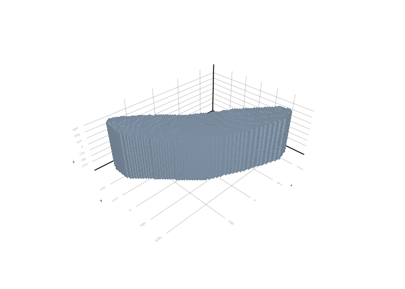
The filtered blocks constitute our domain of interpolation.
12.3.3 Interpolation of grades
We saw that the distribution of chemical elements in the drill hole samples is very skewed. This is always the case in the mining industry. Another issue is that metal and mineral grades are examples of compositional data (Aitchison 1982). The values in these variables are constrained to live in the interval \([0,1]\) and to sum up to 100% if all chemical elements are considered.
12.3.3.1 Preprocessing
In order to remove compositional data constraints, we will perform the centered log-ratio transform (CLR) from the CoDa.jl module:
grades = dtable |> Select("Cu", "Au", "Ag", "S") |> DropUnits()
grades |> CLR() |> values |> pairplot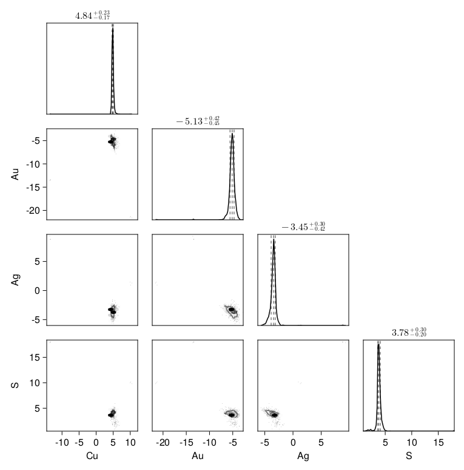
After the transform, the variables are free to vary in the unbounded interval \([-\infty,\infty]\). The theory behind this transform is beyond the scope of this book. Nevertheless, it is a simple mathematical expression in terms of logarithms of ratios (e.g., Cu/S).
Next, we attempt to transform the multivariate distribution to a multivariate standard normal using the ProjectionPursuit transform:
grades |> CLR() |> ProjectionPursuit() |> values |> pairplot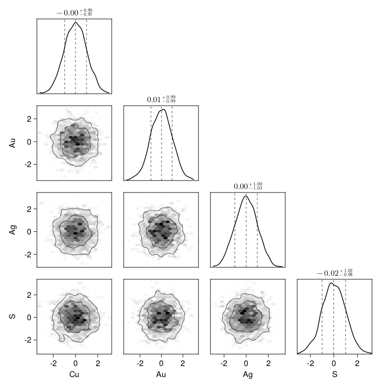
The ProjectionPursuit is an advanced statistical transform that removes non-linear associations between variables using an iterative procedure (Friedman 1987). The result is a set of independent variables that can be interpolated separately.
In order to “undo” these transforms after the interpolation, we create a revertible pipeline:
preproc = CLR() → ProjectionPursuit()
samples, cache = apply(preproc, grades)
samples| Cu | Au | Ag | S | geometry |
|---|---|---|---|---|
| Continuous | Continuous | Continuous | Continuous | Point3 |
| [NoUnits] | [NoUnits] | [NoUnits] | [NoUnits] | |
| -0.910077 | 1.33202 | -1.22824 | 1.42417 | (559.725, -513.31, 252.82) |
| -1.30735 | -0.397728 | -1.82794 | 1.07335 | (558.955, -515.23, 246.87) |
| -0.427393 | 1.10114 | 0.405735 | 1.30713 | (557.225, -519.61, 233.37) |
| -1.45444 | 1.30379 | -0.296088 | -0.500896 | (555.375, -524.3, 218.92) |
| -0.539455 | 1.10362 | -0.580683 | -0.394461 | (553.825, -528.21, 206.94) |
| -0.878292 | 1.7105 | -0.550119 | 0.639503 | (552.075, -532.56, 193.91) |
| -0.868341 | 1.26913 | -2.17897 | 1.47092 | (550.305, -537.08, 180.8) |
| -1.90801 | 0.187938 | -0.619263 | 0.598715 | (547.495, -544.31, 160.08) |
| 0.0192022 | -1.28323 | -1.07822 | 1.23984 | (544.335, -552.43, 137.08) |
| -1.27148 | -0.675161 | -0.187471 | -0.264747 | (541.695, -559.19, 117.96) |
| ⋮ | ⋮ | ⋮ | ⋮ | ⋮ |
12.3.3.2 Geospatial correlation
Let’s fit a theoretical variogram for all four (independent) variables:
ns = setdiff(names(samples), ["geometry"])
gs = [EmpiricalVariogram(samples, n, estimator = :cressie) for n in ns]
γs = [fit(Variogram, g, h -> exp(-h/100)) for g in gs]4-element Vector{Variogram}:
ExponentialVariogram(sill=0.8801474088592013, nugget=0.24772450858913134, range=212.5701830977252, metric=Euclidean)
MaternVariogram(sill=0.9401991750635096, nugget=0.574648676443422, order=1.0, range=59.708505496298514, metric=Euclidean)
ExponentialVariogram(sill=0.889381318771832, nugget=0.4588932341452333, range=143.81366868894236, metric=Euclidean)
MaternVariogram(sill=0.9038324320737419, nugget=0.4971537333180069, order=1.0, range=85.00508013845267, metric=Euclidean)
Note
We performed the fit of the variogram model using the weighting function h -> exp(-h/100) that penalizes the lag distance h with an exponential model. The constant 100 was chosen based on visual inspection of the EmpiricalVariogram estimates below.
function gammaplot(n, g, γ)
Mke.plot(g, axis = (; title = n))
Mke.plot!(γ, maxlag = 300, vcolor = "teal")
Mke.current_figure()
end
gammaplot(ns[1], gs[1], γs[1])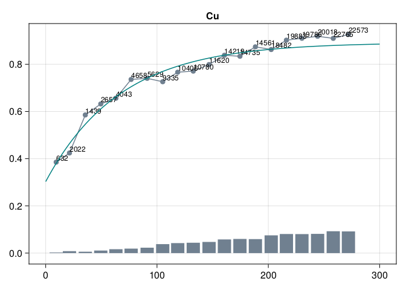
gammaplot(ns[2], gs[2], γs[2])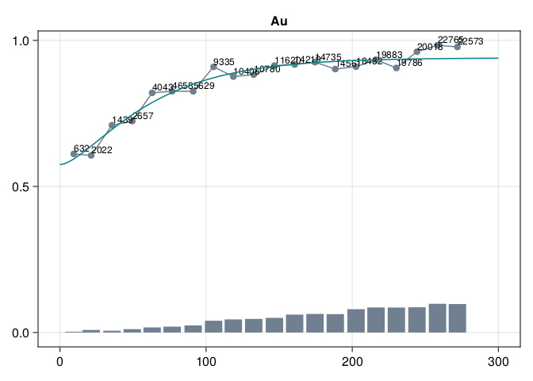
gammaplot(ns[3], gs[3], γs[3])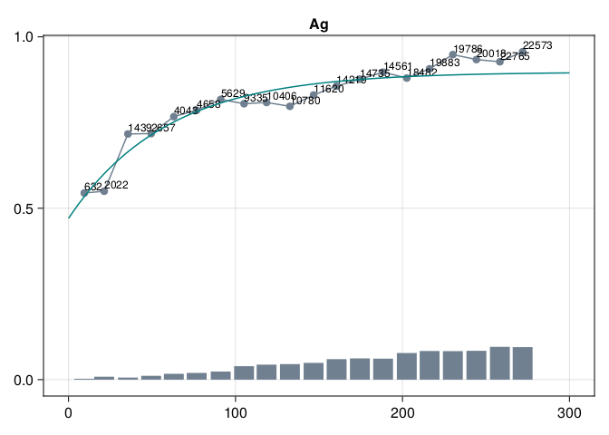
gammaplot(ns[4], gs[4], γs[4])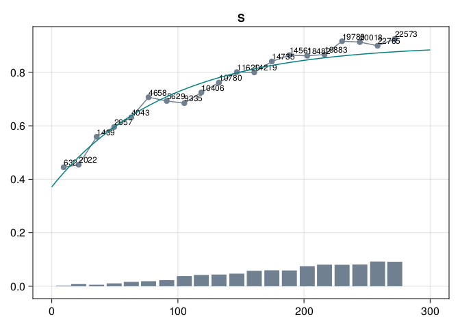
Assuming that the variogram models are ok, we can proceed to interpolation.
12.3.3.3 Geostatistical interpolation
Given the domain of interpolation, the samples and the variogram models, we can perform interpolation with InterpolateNeighbors:
models = [n => Kriging(γ) for (n, γ) in zip(ns, γs)]
interp = samples |> InterpolateNeighbors(blocks, models...)| Cu | Au | Ag | S | geometry |
|---|---|---|---|---|
| Continuous | Continuous | Continuous | Continuous | Hexahedron |
| [NoUnits] | [NoUnits] | [NoUnits] | [NoUnits] | |
| -0.292203 | -0.206659 | 0.221825 | 0.480329 | Hexahedron((724.995, -882.9, -399.92), ..., (724.995, -857.9, -387.42)) |
| -0.0489634 | -0.0340312 | 0.369357 | 0.971583 | Hexahedron((749.995, -882.9, -399.92), ..., (749.995, -857.9, -387.42)) |
| -0.0491034 | -0.0338969 | 0.369372 | 0.971369 | Hexahedron((774.995, -882.9, -399.92), ..., (774.995, -857.9, -387.42)) |
| -0.049204 | -0.0338136 | 0.36938 | 0.971202 | Hexahedron((799.995, -882.9, -399.92), ..., (799.995, -857.9, -387.42)) |
| -0.0701882 | 0.307623 | 0.0117876 | -0.0417867 | Hexahedron((824.995, -882.9, -399.92), ..., (824.995, -857.9, -387.42)) |
| -0.407598 | 0.0325084 | 0.420902 | 0.470333 | Hexahedron((674.995, -857.9, -399.92), ..., (674.995, -832.9, -387.42)) |
| -0.292235 | -0.206686 | 0.221831 | 0.480682 | Hexahedron((699.995, -857.9, -399.92), ..., (699.995, -832.9, -387.42)) |
| -0.292278 | -0.206449 | 0.221865 | 0.480739 | Hexahedron((724.995, -857.9, -399.92), ..., (724.995, -832.9, -387.42)) |
| -0.0491437 | -0.0338048 | 0.369391 | 0.971485 | Hexahedron((749.995, -857.9, -399.92), ..., (749.995, -832.9, -387.42)) |
| -0.0493031 | -0.0336414 | 0.369408 | 0.971225 | Hexahedron((774.995, -857.9, -399.92), ..., (774.995, -832.9, -387.42)) |
| ⋮ | ⋮ | ⋮ | ⋮ | ⋮ |
Let’s confirm that the interpolated values follow the same standard normal distribution:
interp |> Sample(10000) |> values |> pairplot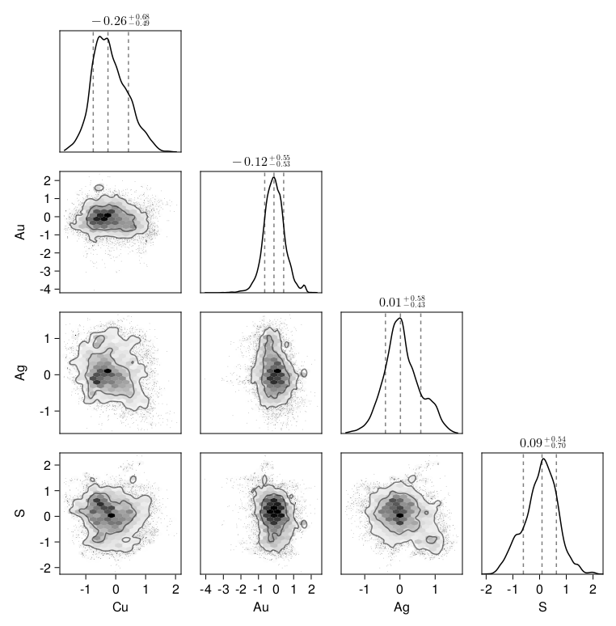
12.3.3.4 Postprocessing
In order to get the interpolated values in the original compositional space, we need to revert the preprocessing pipeline:
estim = revert(preproc, interp, cache)| Cu | Au | Ag | S | geometry |
|---|---|---|---|---|
| Continuous | Continuous | Continuous | Continuous | Hexahedron |
| [NoUnits] | [NoUnits] | [NoUnits] | [NoUnits] | |
| 0.74106 | 3.26151e-5 | 0.000191516 | 0.258716 | Hexahedron((724.995, -882.9, -399.92), ..., (724.995, -857.9, -387.42)) |
| 0.740687 | 2.69667e-5 | 0.000196113 | 0.25909 | Hexahedron((749.995, -882.9, -399.92), ..., (749.995, -857.9, -387.42)) |
| 0.74068 | 2.6964e-5 | 0.00019616 | 0.259096 | Hexahedron((774.995, -882.9, -399.92), ..., (774.995, -857.9, -387.42)) |
| 0.740679 | 2.69637e-5 | 0.000196168 | 0.259098 | Hexahedron((799.995, -882.9, -399.92), ..., (799.995, -857.9, -387.42)) |
| 0.749822 | 3.62715e-5 | 0.00019001 | 0.249952 | Hexahedron((824.995, -882.9, -399.92), ..., (824.995, -857.9, -387.42)) |
| 0.739944 | 3.36155e-5 | 0.000196177 | 0.259827 | Hexahedron((674.995, -857.9, -399.92), ..., (674.995, -832.9, -387.42)) |
| 0.741087 | 3.26119e-5 | 0.000191469 | 0.258689 | Hexahedron((699.995, -857.9, -399.92), ..., (699.995, -832.9, -387.42)) |
| 0.741072 | 3.26138e-5 | 0.000191492 | 0.258704 | Hexahedron((724.995, -857.9, -399.92), ..., (724.995, -832.9, -387.42)) |
| 0.740681 | 2.69642e-5 | 0.000196159 | 0.259096 | Hexahedron((749.995, -857.9, -399.92), ..., (749.995, -832.9, -387.42)) |
| 0.740673 | 2.69596e-5 | 0.000196204 | 0.259104 | Hexahedron((774.995, -857.9, -399.92), ..., (774.995, -832.9, -387.42)) |
| ⋮ | ⋮ | ⋮ | ⋮ | ⋮ |
estim |> Select("Cu") |> viewer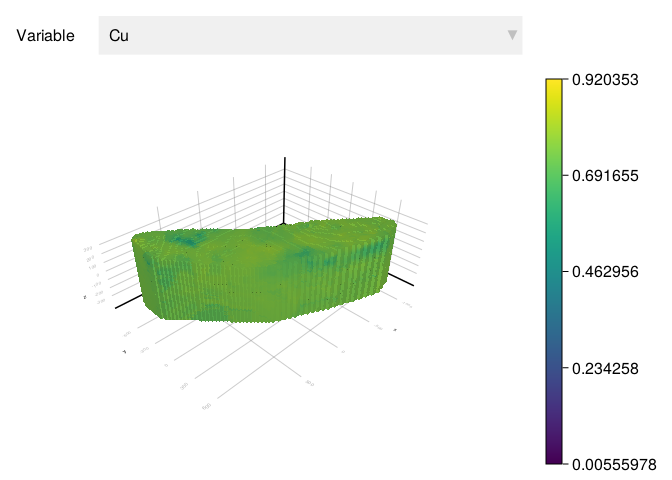
12.3.4 Model of recovery
We introduce a simplistic model of metallurgical recovery using the grade of copper estimated at the mining blocks. We assume that the logistic function represents an ideal behavior for the recovery as the grade of copper increases:
μ = mean(estim.Cu) - 0.1
σ = std(estim.Cu)
f(Cu) = 1 / (1 + exp(-(Cu - μ) / σ))f (generic function with 1 method)estim = estim |> Map("Cu" => f => "f")| Cu | Au | Ag | S | f | geometry |
|---|---|---|---|---|---|
| Continuous | Continuous | Continuous | Continuous | Continuous | Hexahedron |
| [NoUnits] | [NoUnits] | [NoUnits] | [NoUnits] | [NoUnits] | |
| 0.74106 | 3.26151e-5 | 0.000191516 | 0.258716 | 0.96556 | Hexahedron((724.995, -882.9, -399.92), ..., (724.995, -857.9, -387.42)) |
| 0.740687 | 2.69667e-5 | 0.000196113 | 0.25909 | 0.965144 | Hexahedron((749.995, -882.9, -399.92), ..., (749.995, -857.9, -387.42)) |
| 0.74068 | 2.6964e-5 | 0.00019616 | 0.259096 | 0.965136 | Hexahedron((774.995, -882.9, -399.92), ..., (774.995, -857.9, -387.42)) |
| 0.740679 | 2.69637e-5 | 0.000196168 | 0.259098 | 0.965135 | Hexahedron((799.995, -882.9, -399.92), ..., (799.995, -857.9, -387.42)) |
| 0.749822 | 3.62715e-5 | 0.00019001 | 0.249952 | 0.974056 | Hexahedron((824.995, -882.9, -399.92), ..., (824.995, -857.9, -387.42)) |
| 0.739944 | 3.36155e-5 | 0.000196177 | 0.259827 | 0.964301 | Hexahedron((674.995, -857.9, -399.92), ..., (674.995, -832.9, -387.42)) |
| 0.741087 | 3.26119e-5 | 0.000191469 | 0.258689 | 0.965589 | Hexahedron((699.995, -857.9, -399.92), ..., (699.995, -832.9, -387.42)) |
| 0.741072 | 3.26138e-5 | 0.000191492 | 0.258704 | 0.965573 | Hexahedron((724.995, -857.9, -399.92), ..., (724.995, -832.9, -387.42)) |
| 0.740681 | 2.69642e-5 | 0.000196159 | 0.259096 | 0.965137 | Hexahedron((749.995, -857.9, -399.92), ..., (749.995, -832.9, -387.42)) |
| 0.740673 | 2.69596e-5 | 0.000196204 | 0.259104 | 0.965128 | Hexahedron((774.995, -857.9, -399.92), ..., (774.995, -832.9, -387.42)) |
| ⋮ | ⋮ | ⋮ | ⋮ | ⋮ | ⋮ |
Please check the paper by Hoffimann et al. (2022b) for a more elaborate model of metallurgical recovery in the locked-cycle-test.
12.3.5 Economic assessment
Given the block model with the grade of copper and metallurgical recovery, we can proceed and apply the formula of economic value stated in our objectives:
ρ = 2.75 # ton / m^3
P = 4000 # U$ / ton
Cₘ = 4 # U$ / ton
Cₚ = 10 # U$ / ton
estim = @transform(estim,
:value = volume(:geometry) * ρ * ((:Cu / 100) * :f * P - (Cₘ + Cₚ))
)| Cu | Au | Ag | S | f | value | geometry |
|---|---|---|---|---|---|---|
| Continuous | Continuous | Continuous | Continuous | Continuous | Continuous | Hexahedron |
| [NoUnits] | [NoUnits] | [NoUnits] | [NoUnits] | [NoUnits] | [NoUnits] | |
| 0.74106 | 3.26151e-5 | 0.000191516 | 0.258716 | 0.96556 | 3.14134e5 | Hexahedron((724.995, -882.9, -399.92), ..., (724.995, -857.9, -387.42)) |
| 0.740687 | 2.69667e-5 | 0.000196113 | 0.25909 | 0.965144 | 3.13559e5 | Hexahedron((749.995, -882.9, -399.92), ..., (749.995, -857.9, -387.42)) |
| 0.74068 | 2.6964e-5 | 0.00019616 | 0.259096 | 0.965136 | 3.1355e5 | Hexahedron((774.995, -882.9, -399.92), ..., (774.995, -857.9, -387.42)) |
| 0.740679 | 2.69637e-5 | 0.000196168 | 0.259098 | 0.965135 | 3.13548e5 | Hexahedron((799.995, -882.9, -399.92), ..., (799.995, -857.9, -387.42)) |
| 0.749822 | 3.62715e-5 | 0.00019001 | 0.249952 | 0.974056 | 3.26879e5 | Hexahedron((824.995, -882.9, -399.92), ..., (824.995, -857.9, -387.42)) |
| 0.739944 | 3.36155e-5 | 0.000196177 | 0.259827 | 0.964301 | 312407.0 | Hexahedron((674.995, -857.9, -399.92), ..., (674.995, -832.9, -387.42)) |
| 0.741087 | 3.26119e-5 | 0.000191469 | 0.258689 | 0.965589 | 3.14175e5 | Hexahedron((699.995, -857.9, -399.92), ..., (699.995, -832.9, -387.42)) |
| 0.741072 | 3.26138e-5 | 0.000191492 | 0.258704 | 0.965573 | 3.14152e5 | Hexahedron((724.995, -857.9, -399.92), ..., (724.995, -832.9, -387.42)) |
| 0.740681 | 2.69642e-5 | 0.000196159 | 0.259096 | 0.965137 | 3.13551e5 | Hexahedron((749.995, -857.9, -399.92), ..., (749.995, -832.9, -387.42)) |
| 0.740673 | 2.69596e-5 | 0.000196204 | 0.259104 | 0.965128 | 3.13537e5 | Hexahedron((774.995, -857.9, -399.92), ..., (774.995, -832.9, -387.42)) |
| ⋮ | ⋮ | ⋮ | ⋮ | ⋮ | ⋮ | ⋮ |
We can then visualize all blocks with a positive economic value:
estim |> Filter(x -> x.value > 0) |> Select("value") |> viewer
Or any criterion of interest such as positive economic value and small fraction of contaminants:
estim |> Filter(x -> x.value > 0 && x.S < 0.25)| Cu | Au | Ag | S | f | value | geometry |
|---|---|---|---|---|---|---|
| Continuous | Continuous | Continuous | Continuous | Continuous | Continuous | Hexahedron |
| [NoUnits] | [NoUnits] | [NoUnits] | [NoUnits] | [NoUnits] | [NoUnits] | |
| 0.749822 | 3.62715e-5 | 0.00019001 | 0.249952 | 0.974056 | 3.26879e5 | Hexahedron((824.995, -882.9, -399.92), ..., (824.995, -857.9, -387.42)) |
| 0.749812 | 3.63122e-5 | 0.000190035 | 0.249962 | 0.974048 | 3.26866e5 | Hexahedron((824.995, -857.9, -399.92), ..., (824.995, -832.9, -387.42)) |
| 0.749806 | 3.63154e-5 | 0.000190036 | 0.249967 | 0.974043 | 3.26858e5 | Hexahedron((849.995, -857.9, -399.92), ..., (849.995, -832.9, -387.42)) |
| 0.749819 | 3.62567e-5 | 0.000190033 | 0.249955 | 0.974054 | 3.26875e5 | Hexahedron((874.995, -857.9, -399.92), ..., (874.995, -832.9, -387.42)) |
| 0.749816 | 3.63102e-5 | 0.000190033 | 0.249957 | 0.974052 | 3.26872e5 | Hexahedron((849.995, -832.9, -399.92), ..., (849.995, -807.9, -387.42)) |
| 0.749812 | 3.6312e-5 | 0.000190035 | 0.249961 | 0.974048 | 326866.0 | Hexahedron((874.995, -832.9, -399.92), ..., (874.995, -807.9, -387.42)) |
| 0.749819 | 3.62553e-5 | 0.000190049 | 0.249954 | 0.974054 | 326876.0 | Hexahedron((899.995, -832.9, -399.92), ..., (899.995, -807.9, -387.42)) |
| 0.749811 | 3.63125e-5 | 0.000190035 | 0.249962 | 0.974047 | 3.26865e5 | Hexahedron((899.995, -807.9, -399.92), ..., (899.995, -782.9, -387.42)) |
| 0.751086 | 5.4119e-5 | 0.000229014 | 0.248631 | 0.9751 | 3.28611e5 | Hexahedron((574.995, -732.9, -399.92), ..., (574.995, -707.9, -387.42)) |
| 0.751127 | 5.40899e-5 | 0.000228964 | 0.24859 | 0.975133 | 3.28667e5 | Hexahedron((549.995, -707.9, -399.92), ..., (549.995, -682.9, -387.42)) |
| ⋮ | ⋮ | ⋮ | ⋮ | ⋮ | ⋮ | ⋮ |
12.4 Summary
In this chapter, we illustrated an application of the framework in the mining industry. Among other things, we learned how to
- Perform simple economic assessment based on grades and metallurgical recoveries estimated at mining blocks using simple interpolation of transformed variables from drill hole samples.
- Use the tools covered in previous chapters to localize regions of interest in the mineral deposit.
Although the mathematical model presented here is simple, it is what most mining companies do. There is opportunity to improve these types of estimates with more sophisticated geospatial data science pipelines.